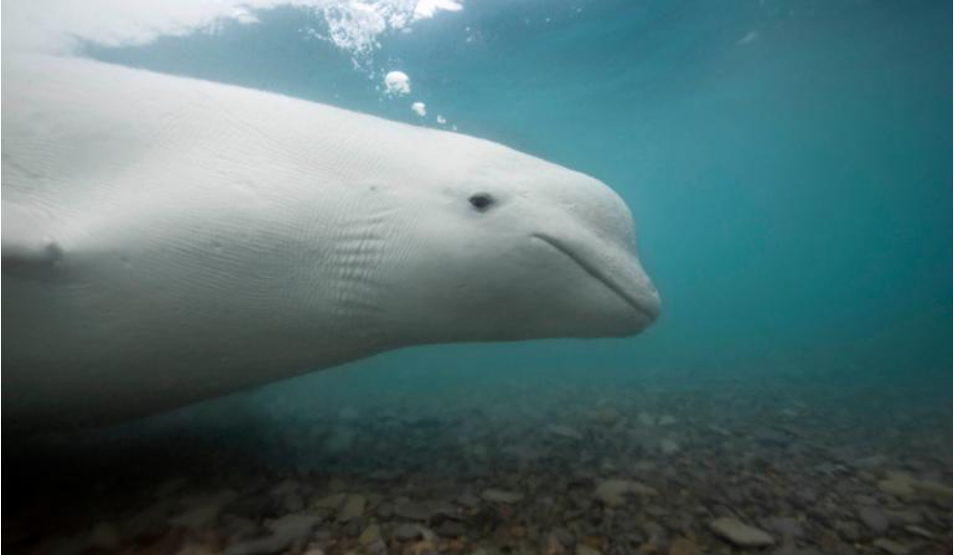
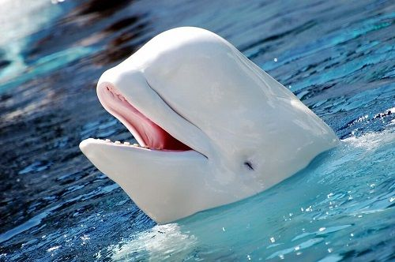

Cá Voi trắng

Lịch sử tiến hóa và đặc điểm Cá voi trắng
Cá voi trắng Qua các nghiên cứu DNA ti thể độc lập từ các nhà khoa
học trên toàn thế giới, tổ tiên của loài cá voi đã có từ 34-30 triệu năm TCN. Họ Cá voi sớm tách
ra so với các loài khác từ 15-11 triệu năm TCN. Sau đó là tiến hóa và hoàn thiện bộ Gen cho tới
bây giờ. Tổ tiên Cá voi trắng từng sống ở vùng nước ấm hơn nhưng khi Kỷ băng hà xuất hiện, chúng
dần thích nghi và chuyển lên vùng Bắc Cực sinh sống
Đã từng có nghiên cứu cho thấy Cá voi trắng có thể sống tới 70-80 tuổi, tuy nhiên dựa vào các
lớp răng. Sử dụng công nghệ Radiocarbon đã thấy sự phát triển của chúng thấp hơn, chỉ khoảng 30
tuổi.

Ăn uống của cá voi trắng
Thức ăn và cách thức săn mồi của cá voi trắng. Cá voi trắng là loài
ăn tạp, thức ăn của chúng khá đa dạng nhưng hầu hết đều là các loại sinh vật, động vật nhỏ ở
dưới biển. Thức ăn quen thuộc của loài cá voi trắng là các động vật giáp xác (tôm, cua nhỏ), các
loại cá nhỏ, các sinh vật không xương và các loại giun biển.